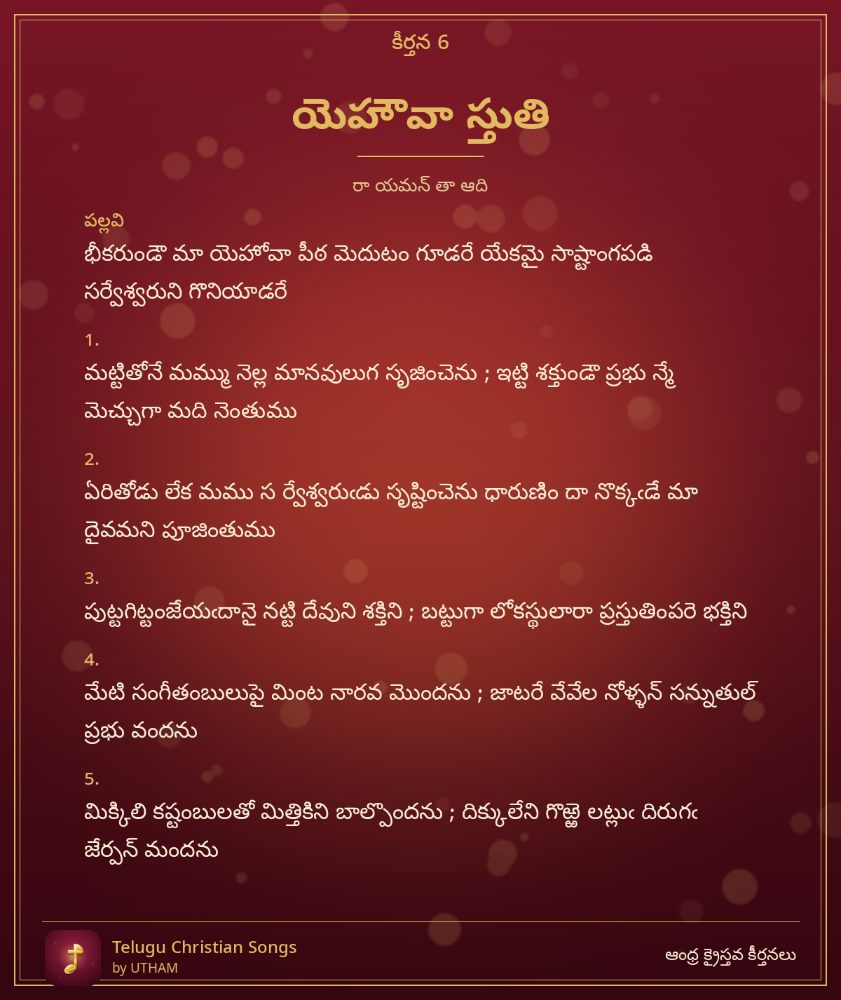

కీర్తన 6 – యెహౌవా స్తుతి

Yehauvaa Stuti – bheekarumdau maa yehovaa peetha medutam goodare yekamai
పల్లవి (Pallavi)
భీకరుండౌ మా యెహోవా పీఠ మెదుటం గూడరే యేకమై సాష్టాంగపడి సర్వేశ్వరుని గొనియాడరే
చరణం 1
మట్టితోనే మమ్ము నెల్ల మానవులుగ సృజించెను ; ఇట్టి శక్తుండౌ ప్రభు న్మే మెచ్చుగా మది నెంతుము
చరణం 2
ఏరితోడు లేక మము స ర్వేశ్వరుఁడు సృష్టించెను ధారుణిం దా నొక్కఁడే మా దైవమని పూజింతుము
చరణం 3
పుట్టగిట్టంజేయఁదానై నట్టి దేవుని శక్తిని ; బట్టుగా లోకస్థులారా ప్రస్తుతింపరె భక్తిని
చరణం 4
మేటి సంగీతంబులుపై మింట నారవ మొందను ; జాటరే వేవేల నోళ్ళన్ సన్నుతుల్ ప్రభు వందను
చరణం 5
మిక్కిలి కష్టంబులతో మిత్తికిని బాల్పొందను ; దిక్కులేని గొఱ్ఱె లట్లుఁ దిరుగఁ జేర్పన్ మందను
–